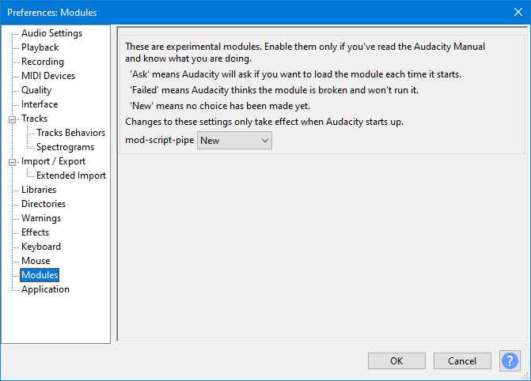

Modules Preferences
| Audacity currently ships only with the mod-script-pipe module, though some other experimental modules are available in the source code. |
- Accessed by: (on a Mac )
- 
- Modules Preferences.
Optional Modules
The following module is considered experimental.
|
mod-script-pipe
This module now ships with Audacity, but is not enabled by default.
This is a plug-in that allows Audacity to be driven from an external Python script, or using any scripting language that supports named pipes.
Commands are sent to Audacity over a named pipe. A sample Python script is included in the latest Audacity development code.
Any program that can open a pipe to that module could control Audacity. This has potentially serious security implications. For example another program could control Audacity, and potentially could exploit some other bug in Audacity or in mod-script-pipe to crash it. Hackers working out how to control a machine remotely often start by working out how to crash it remotely and work up from there. For security reasons it would be totally inappropriate to use scripting with audacity on a webserver to provide audio processing.
For more details on how to use scripting, see Scripting.
| Information about other experimental modules may be found on the Modules page. |
Loading additional modules into Audacity
To use an experimental module:
- Add a "modules" folder to the Audacity installation folder
- Add the file to the modules folder, restart Audacity and open Modules Preferences
- You should see that file is marked as "New":
- Click the dropdown menu for the item, change it to "Enabled", press then restart Audacity.
- When you restart Audacity, you should now see the new entry in the Tools Menu.
| Modules should be built on the same day as Audacity, otherwise the module will fail to load. If you see a "Module Unsuitable" error, you will need to rebuild Audacity and the module, launch Audacity, change the entry for the module from "Failed" to "Enabled", then restart Audacity. |